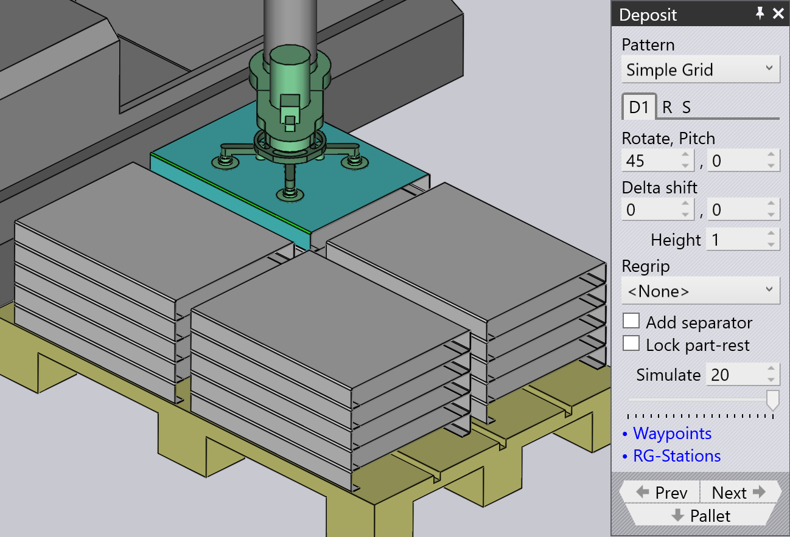

Τύποι μοτίβου απόθεσης
Simple Grid
Το μοτίβο Simple Grid είναι το πιο συχνά χρησιμοποιούμενο, και απλώς στοιβάζει τεμάχια σε ένα ορθογώνιο πλέγμα στην παλέτα.
Όταν χρησιμοποιούμε τη θέση Simple Grid, μόνο μία θέση απόθεσης D1 είναι διαθέσιμη από προεπιλογή.

Weave
Το μοτίβο Weave είναι χρήσιμο με μακριά και λεπτά τεμάχια. Τα τεμάχια στα στρώματα D2 τοποθετούνται 90° από τα τεμάχια στο στρώμα D1 όπως φαίνεται παραπλεύρως.


-
Η ρύθμιση Weave ελέγχει τον αριθμό των τεμαχίων που στοιβάζονται δίπλα-δίπλα σε κάθε στρώμα του πλέγματος.
-
Το Gap είναι το κενό μεταξύ καθενός από αυτά τα τεμάχια εντός του πλέγματος
-
Οι ρυθμίσεις Grid στην καρτέλα Repeat μπορούν στη συνέχεια να χρησιμοποιηθούν για την επανάληψη ολόκληρης της στοίβας πλέγματος πολλές φορές στην παλέτα. Σε αυτό το παράδειγμα, η στοίβα πλέγματος επαναλαμβάνεται δύο φορές (2 στήλες, 1 σειρά).
-
Η ρύθμιση Gap (Z,X) στην καρτέλα Repeat χρησιμοποιείται όταν το πλέγμα επαναλαμβάνεται και καθορίζει το βήμα μεταξύ των στρωμάτων πλέγματος.
Alternating
Το μοτίβο Alternating είναι το πιο ευέλικτο. Σε αυτό το μοτίβο, μπορείτε να ελέγξετε τον προσανατολισμό, την αναστροφή και τη σχετική μετατόπιση κάθε εναλλασσόμενου στρώματος.
Το εναλλασσόμενο μοτίβο παρέχει μια πιο σταθερή και επίσης μια πιο συμπαγή στοίβαξη τεμαχίων.
Όταν χρησιμοποιούμε το μοτίβο Alternating, οι θέσεις απόθεσης D1 και D2 μαζί με την Regrip R1 είναι διαθέσιμες από προεπιλογή.
| Προσαρμόστε τις τιμές Delta shift στις D1, D2 και προσθέστε Regrip για να κλειδώσετε τα τεμάχια μεταξύ τους. |

Alternating Batch
Το μοτίβο Alternating Batch είναι παρόμοιο με το μοτίβο alternating, αλλά με τη δυνατότητα στοίβαξης εξαρτημάτων σε παρτίδες και εναλλασσόμενα στρώματα.
Το Batch shift χρησιμοποιείται για τη μετακίνηση τεμαχίων προς και από τους άξονες Z και X εντός μιας παρτίδας.
Το Batch count χρησιμοποιείται για τον ορισμό του αριθμού εξαρτημάτων ανά παρτίδα ανά απόθεση D1, ο οποίος μπορεί να κυμαίνεται από 1 έως 50. Στο παρακάτω παράδειγμα είναι ορισμένο στο 5.
Το Delta shift χρησιμοποιείται για τη μετακίνηση μιας ολόκληρης απόθεσης D1 που αποτελείται από παρτίδες προς και από τους άξονες Z και X.


Χρησιμοποιήστε την επιλογή layers στην καρτέλα Repeat grid (R) για να ορίσετε τον αριθμό παρτίδων ανά απόθεση. Στο παρακάτω παράδειγμα, είναι ορισμένο στο 2.

Drop to Basket
Αυτό το μοτίβο χρησιμοποιείται για τη ρίψη μικρών τεμαχίων σε ένα καλάθι συλλογής, χρησιμοποιώντας τη μηχανική λαβίδα.

Conveyor
Το μοτίβο Conveyor χρησιμοποιείται για την απόθεσητεμαχίων σε ιμάντα μεταφοράς τεμαχίων. Αυτή η επιλογή είναι απαραίτητη όταν τα μακριά λεπτά τεμάχια αποτίθενται σε ιμάντα μεταφοράς.
| Όταν χρησιμοποιείται μηχανική λαβίδα σιαγόνας για μεσαίου μεγέθους τεμάχια, όλοι οι άλλοι τύποι μοτίβων θα είναι απενεργοποιημένοι για επιλογή, εκτός από το μοτίβο conveyor. |

Inclined
Το μοτίβο Inclined χρησιμοποιείται για τη στοίβαξη τεμαχίων κάθετα ενάντια σε έναν τοίχο (ή μια παλέτα που έχει πλευρικό τοίχο).
| Αυτό το μοτίβο δεν είναι πάντα διαθέσιμο. Το τεμάχιο πρέπει να είναι αρκετά μεγάλο για να είναι αυτό εφικτό. Για μικρά τεμάχια, το ρομπότ δεν μπορεί να φτάσει αρκετά χαμηλά για να στοιβάξει το τεμάχιο ενάντία στον τοίχο. |

Inclined pair
Αυτός ο τύπος μοτίβου είναι πολύ παρόμοιος με το μοτίβο Alternating, εκτός ότι τα τεμάχια αποτίθενται κάθετα ως ζεύγος.
Μια επιπλέον Regrip εισάγεται είτε στην απόθεση D1 είτε D2 για να δημιουργηθεί ένα ζεύγος.
Το Auto-pitch καθορίζει αυτόματα τη γωνία κλίσης της στοίβας.
Η ρύθμιση Pitch χρησιμοποιείται για τη ρύθμιση της γωνίας κλίσης της στοίβαξης και οι τιμές Delta shift χρησιμοποιούνται για τη μετακίνηση στο τεμάχιο στους άξονες X και R για να δημιουργηθεί μια πιο συμπαγής στοίβα.


Manual
Το μοτίβο Manual χρησιμοποιείται για την τοποθέτηση κάθε στρώματος τεμαχίων σε ελαφρώς διαφορετικό προσανατολισμό.

-
Χρησιμοποιήστε το κουμπί Add για να προσθέσετε ένα νέο τεμάχιο πάνω από το ανώτερο στρώμα.
-
Χρησιμοποιήστε τα κουμπιά πλοήγησης δίπλα στην καρτέλα Dn για να μεταβείτε στο προηγούμενο ή επόμενο στρώμα.
-
Οι ρυθμίσεις Delta shift, Rotate και Pitch μπορούν να χρησιμοποιηθούν για τη ρύθμιση του τεμαχίου ώστε να κάθεται καλύτερα στο τεμάχιο από κάτω. Μπορείτε επίσης να χρησιμοποιήσετε το Delta shift και να κάνετε κλικ στο Auto-pitch για να ζητήσετε από το TecZone Bend να υπολογίσει μια βέλτιστη γωνία pitch.
-
Χρησιμοποιήστε το κουμπί Remove για να αφαιρέσετε το ανώτερο τεμάχιο.
-
Αφού δημιουργηθεί μια χειροκίνητη στοίβα, μπορείτε να χρησιμοποιήσετε τις ρυθμίσεις στην καρτέλα Repeat (R) για να επαναλάβετε την ίδια στοίβα σε όλη την παλέτα. Η παραπάνω εικόνα δείχνει την ίδια στοίβα που επαναλαμβάνεται για 2 στήλες, 1 σειρά με κενό 250 mm μεταξύ των στηλών.
-
Οι ρυθμίσεις στην καρτέλα Sequence (S) μπορούν να χρησιμοποιηθούν για τον έλεγχο του αν τα τεμάχια στοιβάζονται by layer ή by pile. Εάν χρησιμοποιήσετε τη στοίβαξη pile-by-pile, όλα τα τεμάχια στην πρώτη στοίβα ολοκληρώνονται πριν ξεκινήσουμε τη δεύτερη στοίβα.